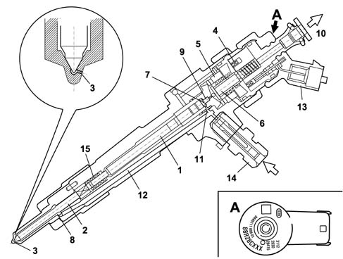

DESCRIPTION OF COMPONENTS
- Path
- Descriptions > 10 ENGINE > 1060 DIESEL FUEL INJECTION SYSTEM > 1060F INJECTORS AND LINES > DESCRIPTION OF COMPONENTS
- Kind
- system description
- Applies to
- engines: 2.4 JTD 20V; all production periods
- Interactive page
- https://sloeber94.github.io/elrnDB-lThss/en/#/841099
Applies to: engines: 2.4 JTD 20V; all production periods
INJECTORS
Specifications
Structure
The injectors are fitted on the cylinder head and controlled by the Engine Control Node.
The injector may be divided into two sections:
- actuator/nebuliser consisting of pressure rod (1), pin (2) and nozzle (3)
- control solenoid consisting of coil (4) and pilot valve (5).
Operation
General remarks
Injector operation is divided into three stages:
- rest position. The coil (4) is deactivated and the plunger (6) is in the closed position to prevent fuel from being introduced into the cylinder Fc %gt; Fa (Fc: due to line pressure acting on control area 7 of rod 1; Fa: due to line pressure acting on feed volume 8).
- injection start. Coil (4) is excited and causes plunger (6) to rise. Control volume fuel (9) flows out towards return manifold (10) to bring about a pressure drop on control area (7). Simultaneously, line pressure flowing through intake duct (12) exercises a force Fa %gt; Fc in supply volume (8) to cause pin (2) to lift and allow fuel into the cylinders.
- injection end. Coil (4) is deactivated and causes plunger (6) to return to closed position. This rebalances the forces so that pin (2) returns to closed position and thus ends the injection.
IMA Classification
During the test stage the injectors are checked with the specifications verified in different pressure/flow rate conditions.
All the injectors that do not meet a certain standard are rejected; the remaining ones are classified using a 9 character alphanumerical code, known as an IMA code, imprinted by laser on the top part of the magnet.
During fitting on the vehicle the control unit should memorize the individual code and, if one or more injectors is replaced in a service situation the alteration to the code should be made during the diagnosis using the appropriate equipment.

- 1. Pressure rod
- 2. Pin
- 3. Nozzle (n°6)
- 4. Coil
- 5. Pilot valve
- 6. Ball plunger
- 7. Control area
- 8. Feed volume
- 9. Control volume
- 10. Fuel return - low pressure
- 11. Control duct
- 12. Feed duct
- 13. Electrical connection
- 14. Fuel return connector - high pressure
- 15. Spring
SINGLE FUEL MANIFOLD PIPE
Specifications
Structure
The single fuel manifold (rail) is fited to the intake side of the cylinder head.
With a volume of 33 cm³, this damps fuel pressure fluctuations due to:
- pressure pump operation
- injector opening.
Fuel pressure sensor [DF_1060G] is fitted in the centre of the delivery manifold.
The hydraulic connections (high pressure) between manifold-pump and manifold-injecors are via steel pipes with a bore of 2 mm and external diameter of 6 mm.